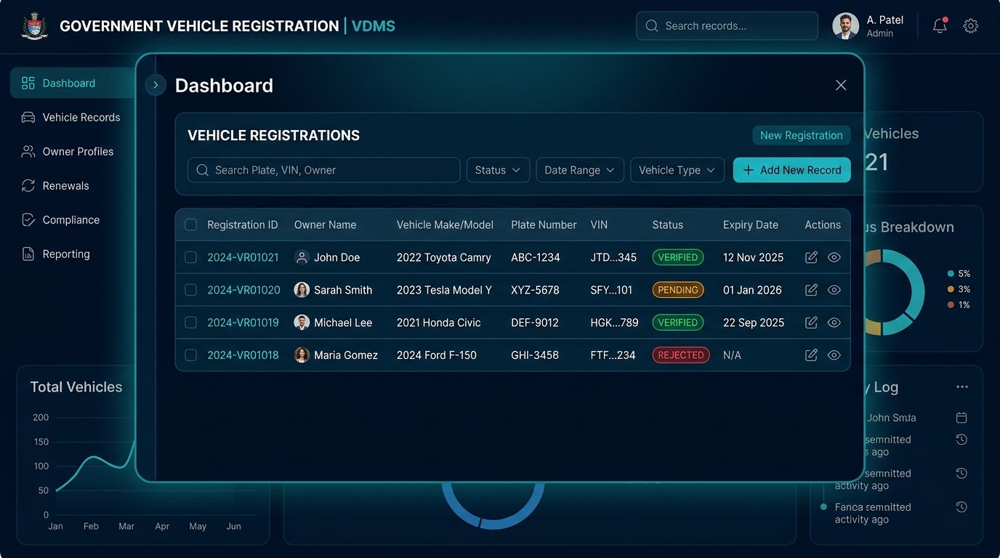
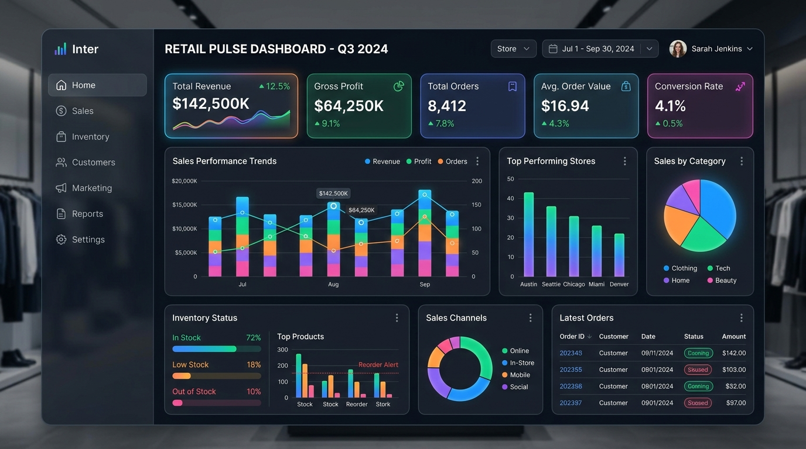

Halo, saya
Valdene Buchori Tio
Mahasiswa Sistem Informasi yang berpengalaman magang dalam administrasi basis data di Samsat Ciledug. Berorientasi pada detail, cepat beradaptasi, dan menguasai dasar-dasar jaringan komputer, Microsoft Office, serta visualisasi data Tableau. Siap berkontribusi optimal sebagai Digital Store Support & IT Support.
Profil & Komitmen Profesional
Dedikasi Tinggi untuk Efisiensi TI & Manajemen Data
Saya adalah mahasiswa aktif program studi Sistem Informasi di Universitas Gunadarma dengan latar belakang pendidikan vokasi di bidang Teknik Komputer dan Jaringan (TKJ) dari SMK Pustek Serpong.
Dengan kombinasi pemahaman teknis perangkat keras, topologi jaringan, serta keterampilan praktis dalam administrasi basis data yang teruji saat magang di Samsat Ciledug, saya memiliki kemampuan analitis dan ketelitian tinggi dalam menangani operasional digital harian.
Karier Target: Digital Store Support Intern & IT Support
Termotivasi untuk mengimplementasikan keahlian troubleshooting jaringan, pemeliharaan hardware, dan pengolahan data untuk mendukung kelancaran operasional gerai ritel modern (seperti Indomaret) dan ekosistem bisnis digital.
Data Pribadi
Pendidikan & Pengalaman
Riwayat Pendidikan
S1 - Sistem Informasi
Fakultas Ilmu Komputer dan Teknologi Informasi. Fokus pada perancangan sistem informasi bisnis, rekayasa perangkat lunak, dan manajemen basis data relasional.
Teknik Komputer dan Jaringan (TKJ)
Mempelajari instalasi jaringan lokal (LAN/WLAN), perakitan & perawatan perangkat keras komputer, konfigurasi router/switch, dan protokol komunikasi data.
Pengalaman Kerja / Magang
Database Administration Intern
- Mendukung entri, pembaruan, dan validasi data registrasi kendaraan bermotor pada sistem basis data perpajakan daerah.
- Mengelola dan mengarsipkan dokumen digital serta fisik dengan tingkat presisi dan akurasi tinggi.
- Bekerja sama secara aktif dengan tim front desk dan administrasi untuk verifikasi berkas wajib pajak.
Keahlian & Penguasaan Alat
Troubleshooting Jaringan
Network MaintenanceMendiagnosis kendala koneksi LAN/WLAN, konfigurasi IP addressing, pengkabelan crimping RJ-45, serta pengujian router dan switch dasar.
IT Support & Hardware Setup
Hardware & PeripheralPerakitan komputer PC, instalasi sistem operasi Windows & software esensial, penanganan periferal kantor (printer, scanner, barcode reader).
Administrasi Basis Data
Data Entry & UpdatingPembaruan record data, verifikasi integritas data, pengarsipan catatan transaksi, dan eliminasi data ganda dengan teliti.
Microsoft Office Suite
Word, Excel, PowerPointPengolahan spreadsheet formula lanjutan (VLOOKUP, IF, PivotTable) di Excel, penyusunan laporan resmi di Word, dan slide presentasi di PowerPoint.
Visualisasi Data Tableau
Business AnalyticsMembangun dashboard visual analitis yang interaktif untuk memonitor indikator kinerja (KPI), volume transaksi, dan tren data.
Front Desk & Customer Service
Pelayanan Publik & KomunikasiMelayani wajib pajak dan pengunjung dengan ramah, mengarahkan prosedur pengurusan dokumen, serta menjaga etika pelayanan prima.
Dokumentasi Digital
Filing & SOP CompliancePenyusunan arsip elektronik yang terstruktur, katalog dokumen administrasi, dan kepatuhan penuh terhadap standar prosedur operasional.
Proyek & Simulasi Praktik

Database & AdministrasiSistem Administrasi & Validasi Basis Data Samsat
Simulasi alur entri dan validasi data kepemilikan kendaraan bermotor dengan jaminan akurasi data 100% pada arsip kepolisian daerah.
Implementasi Jaringan Komputer & Workstation Gerai
Perancangan tata letak kabel UTP, instalasi switch rack, konfigurasi DHCP/Static IP, dan penyusunan POS terminal gerai ritel modern.

Business IntelligenceDashboard Analitik Kinerja Toko & Inventaris
Visualisasi data transaksi harian, monitoring ketersediaan stok produk, dan analisis penjualan multi-kategori menggunakan Tableau & Excel.
Keunggulan untuk Tim IT & Operasional
Latar Belakang Vokasi & Akademik Kuat
Perpaduan keahlian hardware dari SMK TKJ dan wawasan sistem informasi dari universitas terkemuka.
Pengalaman Kerja Riil
Terbiasa dengan ritme kerja instansi pemerintah (Samsat) yang mengutamakan ketelitian dan integritas data.
IPK Unggul (3.91)
Bukti nyata disiplin belajar, kecepatan menyerap teknologi baru, dan komitmen mencapai standar tertinggi.
Kesiapan Dukungan Gerai
Siap sedia menangani tantangan hardware kasir, konektivitas POS, dan pencatatan digital operasional toko.
Mari Terhubung & Berdiskusi
Terbuka untuk peluang magang, proyek IT support, dan posisi kerja digital operations.
Kirim Pesan Langsung
Formulir ini dapat langsung dihubungkan ke WhatsApp atau Email Anda.